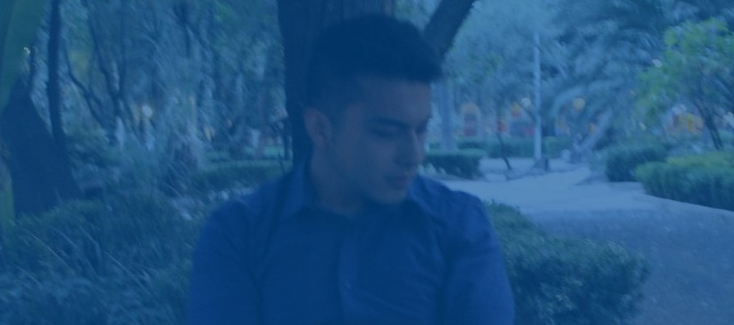

Experiencia
Proyectos escolares desarrollados
Circuito de canicas
Cortador automático de pizzas
Elevador
Gatoception
Aditamento para bicicleta
Encendido de motor por medio de señales mioelectricas
Robot híbrido (serial y móvil)
Balancín PID

Experiencia profesional
enero 2019 - diciembre 2019
Fuí becario del Instituto de ingeniería, participando en un proyecto de divulgación científica por parte del gobierno de le Ciudad de México, específicamente la SECTEI (Secretaría de Educación, Ciencia, Tecnología e Inovación de la Ciudad de México). El objetivo era desarrollar un dispositivo didáctico que facilitara la comprension de un concepto relacionado con la microtecnología.En mi caso desarrollé un "Laboratorio en miniatura", el cual consistia en armar un circuito con microcanales utilizando piezas tipo Lego® y al final se hacía pasar líquidos de diferente consistencia con ayuda de una bomba de jeringas, y el fin era de observar una reacción química al combinar los líquidos para conocer el PH de las sustancias. Todo el sistema se desarrolló utilizando impresión 3d, corte laser y corte de materiales blandos con CNC.
El proyecto se presentó en la feria de las ciencias y humanidades de la UNAM, además de diez presentaciones en la CDMX en los puntos conocidos como PILARES (Puntos de Inovación, Libertad, Arte, Educación y Saberes). Al finalizar las presentaciones, acudí a una entrevista en radio UNAM en el programa de ingeniería en marcha.